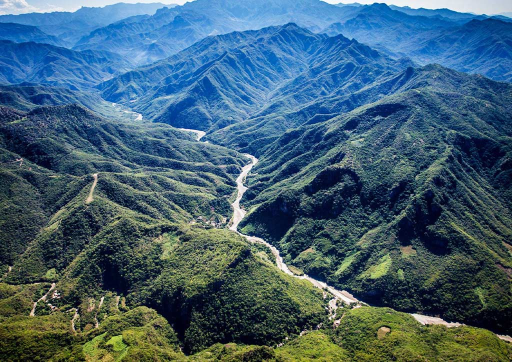

At the Peak of Sierra Madre
Stretching from Cagayan to Quezon, Sierra Madre Mountain Range is truly the longest mountain range in the Philippines.
The mountain range covers 10 provinces and stands proudlyat 6,069 feet. One of the main attractions in the mountain is Mt. Pinagbanderahan.
Mt. Pinagbanderahan is one of the most conserved national parks of the country. It is a historical site that serves as a natural habitat for centuries-old trees and numerous unknown plant species.

Sierra Madre Mountain Range has a lot more to offer besides Mt. Pinagbanderahan. In the trail, you will have the chance to hike, explore a cave, eat local food, swim and jump from a waterfall. Bantakay Falls, one of the main attractions of the mountain range, flaunts of its clear and gushing waters that look like strands of straight hair when viewed from afar.All these fascinating natural works are possible to see because the trek is relatively an easy one and can be therefore recommended to beginners.
What more to offer?
Rizal Park is located next to Intramuros. It’s easiest to take a taxi or jeepney directly to Rizal Park, but you can also take the train to the United Nations station and walk a few minutes to the park.
At the peak, enjoy a picturesque 360° view of Marinduque and Quezon. The trek to Mt. Sierra Madre will surely make you crave for more adventures with us. So why don’t you share life outdoors, Trail Adventours?
Backbone of Luzon
According to the Department of Science in a study of theirs done in 2016, the way the Sierra Madre Mountain Range is formed “slows down” typhoons and tropical cyclones because of its structure. This happens because there’s friction and thus, forces typhoons to focus more on creating rain, which can still be stopped by the mountains. Thus, any village behind the mountain range may suffer some damages but not as severe as if the mountain range were destroyed. The long chain of mountains offers habitats for the innumerable species of animals and plants that have adapted to diverse ecological niches.